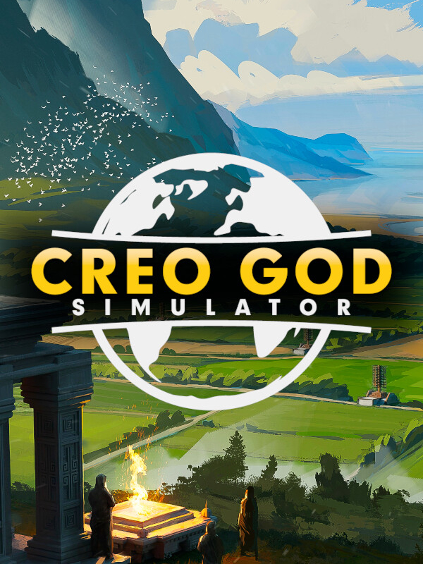

Creo God Simulator
Creo God Simulator
Detalhes
|  | |
| Tempo de jogo | Não Jogado |
| Última Atividade | Nunca |
| Adicionado | 11/02/2025 13:17:42 |
| Modificado | 11/02/2025 13:41:41 |
| Status de Conclusão | Not Played |
| Biblioteca | Steam |
| Fonte | Steam |
| Plataforma | PC (Windows) |
| Data de Lançamento | 23/01/2025 |
| Pontuação da Comunidade | 70 |
| Avaliação da crítica | |
| Pontuação do Usuário | |
| Gênero | Indie Simulator Strategy |
| Desenvolvedor | MKSM Design |
| Editor | MKSM Design |
| Funções | Single Player |
| Links | Steam Official Twitch |
| Tag | |
Descrição
BUILD. SMITE. REPEAT.
Creo God Simulator is a game of city-building, resource management, survival, and a ton of peasant smiting. As the divinely-selected Creostrider, it's your job to build a society bit by bit, while convincing your new population to believe in you as their one true god.
During your time as the Creostrider, you will discover new powers to use and more advanced buildings to place, but beware, as you progress, the randomized events that afflict your town will become more difficult, not to mention that a larger population presents a myriad of engaging challenges to overcome. Can you prove yourself as the new true God, or will you slowly fade from the memory of the people you led?
FEATURES

With God Powers come God Responsibilities
In Creo God Simulator, you are the Creostrider, a being chosen by the Gods to become like them. You are given incredible power to build great cities and smite the lowest peasant. Here are some of the features regarding your newly-found godhood:
Choose your Religion and Creostrider Name
A Willpower System: Each believer generates willpower, which you can use to cast mighty miracles and unlock powerful technologies
Faith/Fear System: Your actions affect your follower's opinions of you
Awesome God Powers: Meteors, lightning, rain, and more - the power's in your hands
Town villagers have the ability to convert each other without your influence or approval (just like in the real world!)

Build a Great Civilization
Creo's unique building system allows you to place buildings in any position you want. Do you want a new shopping center? Go for it! Or perhaps a ghetto surrounding your mines? What about tons of tightly packed homes that will definitely not be a fire hazard? The choice is yours!
Creo God Simulator has an extensive inspiration system/tech tree that you can use to unlock new and more powerful buildings, such as decorations, new workshops, and machines powered by ancient willpower technology.
With Creo's building and inspiration system, your imagination is the limit!
Free-form building placement
A large variety of building types and models
Various types of decorative items to personalize your town
Creo-specific architecture style
An ever-expanding inspiration system/tech tree

A New Gaming Experience with Every Playthrough
Creo God Simulator boasts an exciting main story and procedurally generated worlds, quests, and events! No two playthroughs will ever be the same. Things could be going smoothly for your town when suddenly, an earthquake erupts, and locust swarms descend upon your farms. Once those are dealt with, peace reigns once again, until an angry herd of cats decides that your town will be its new home—this is just one example of the countless stories that you can experience in Creo.
An exciting main storyline
A Procedurally-generated map
Various types of positive and negative procedural events
Cat herds
A regularly updated list of challenging new quests to accomplish

Discover the Ancient Past of Creo
The world of Creo is vast and ancient, with thousands of years of history, stories, and secrets. Those who came before you left numerous artifacts and willpower fragments which you can discover around the map.
These fragments and artifacts can then be collected in your museum to build full sets and for your review! There's plenty of lore to the world of Creo, and the unique archeology system in Creo God Simulator allows you to dive into this mysterious world.
An archaeology collection system which is available if you have a fully-staffed museum in your town
A wide number of ancient willpower fragments and other artifacts
A large collection of ancient writings, ranging from scientific reports, poems, romance shards, and more